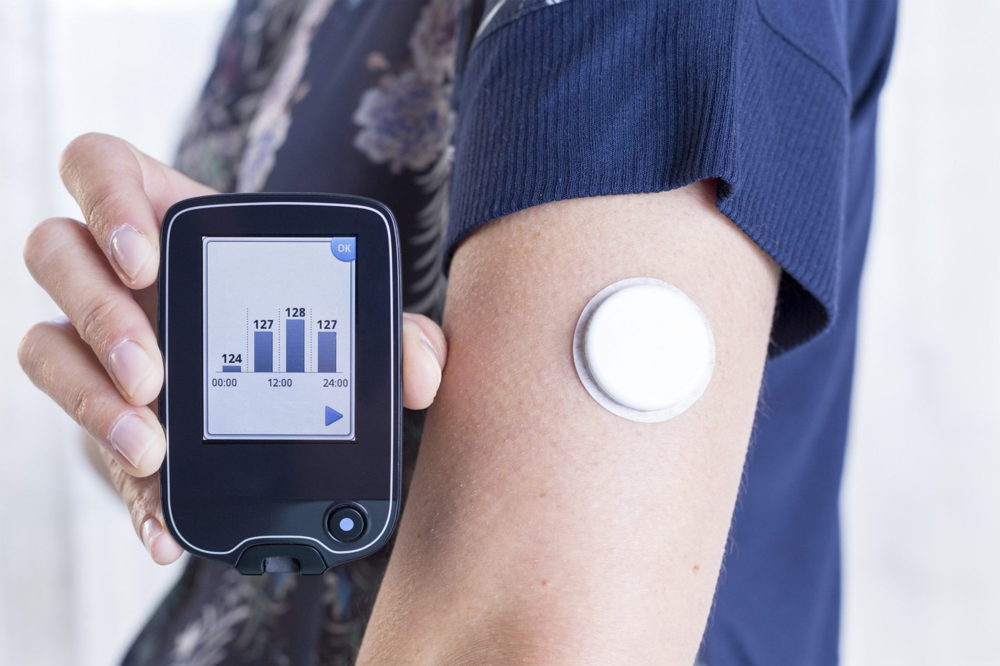

Wearable technology is a hallmark of IoT applications and probably is one of the earliest industries to have deployed the IoT at its service. We happen to see Fit Bits, heart rate monitors and smartwatches everywhere these days.
One of the lesser-known wearables includes the Guardian glucose monitoring device. The device is developed to aid people suffering from diabetes. It detects glucose levels in the body, using a tiny electrode called glucose sensor placed under the skin and relays the information via Radio Frequency to a monitoring device.